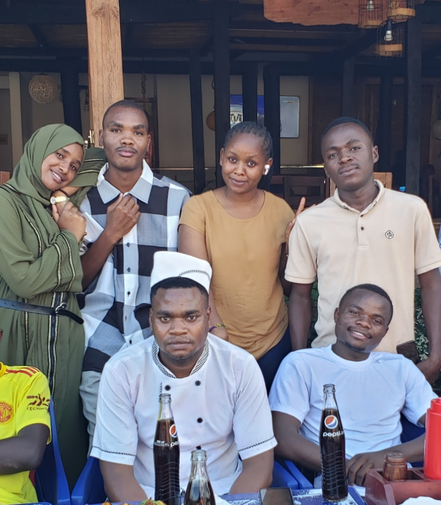

This web page has been created by FILEX THOMAS Group Number 6 from the Bachelor of Science in Tourism and Hospitality Management program. Its purpose is to provide informative, educational, and practical content for students and professionals interested in the operations of travel agencies and airport services. The goal is to create a central space for knowledge sharing, idea generation, and problem-solving. Each section covers real-world challenges, opportunities, and practices within the travel industry. Group members are encouraged to participate actively, share their ideas, comment, and propose improvements. This site will be updated regularly with insights and contributions from group members.
Travel agents play a critical role in the tourism value chain. Their responsibilities extend beyond booking flights and accommodation—they act as advisors, planners, and problem solvers. A travel agent researches destinations, finds competitive prices, books tours and transport, ensures documentation such as visas are in order, and handles any customer service issues before, during, or after a trip. They often work with suppliers, tour operators, airlines, and hotels to ensure clients receive the best possible experience. In modern practice, many travel agents also offer digital tools or mobile support to provide flexible service and real-time solutions.
They must be skilled in communication, negotiation, and risk assessment, especially in a post-COVID travel landscape. Clients increasingly demand personalized services, environmentally responsible travel options, and 24/7 support. Travel agents who can offer value-added services—such as customized itineraries, travel insurance support, and loyalty programs—stand out in the market. A professional travel agent is expected to keep up with changing regulations, security issues, and technology trends like AI-based planning and virtual tours. This section aims to deepen your understanding of how travel agents help bridge customer needs with the service delivery process.
Airport operations refer to the management and coordination of services, infrastructure, and people to ensure that flights run safely, efficiently, and on time. These operations include security screening, baggage handling, aircraft refueling, gate assignment, and passenger services. Airport managers must coordinate with airlines, air traffic control, ground handling staff, and security forces to maintain efficiency and safety. Airport operations also include passenger experience management—signage, lounges, customer information, emergency response systems, and accessibility services. In a highly regulated industry, airports must comply with national and international aviation laws and collaborate with customs and immigration.
Travel agents and airport operations are interconnected. Travel agents often assist passengers in selecting airports based on travel ease, visa requirements, or flight frequencies. They also respond to disruptions at airports—like delays or overbooking. Coordinated communication between travel agents and airport managers ensures a smooth travel experience, especially in peak seasons or during emergencies. As travelers seek more comfort, security, and efficiency, both sectors must collaborate and innovate continuously. Together, they form the backbone of global tourism and transport logistics.
I, Filex Thomas, developed this page to support and elevate the knowledge and participation of our university study group. My goal is to design a collaborative, educational, and engaging digital platform where ideas can flourish. I aim to create a bridge between theoretical classroom knowledge and the practical challenges in the tourism industry. This webpage integrates modern tools like Formspree forms, responsive design, and user-friendly navigation, tailored for both desktop and mobile users. My vision is to see it grow into a forum where members can share challenges, propose innovative solutions, and build a stronger community of future tourism professionals.